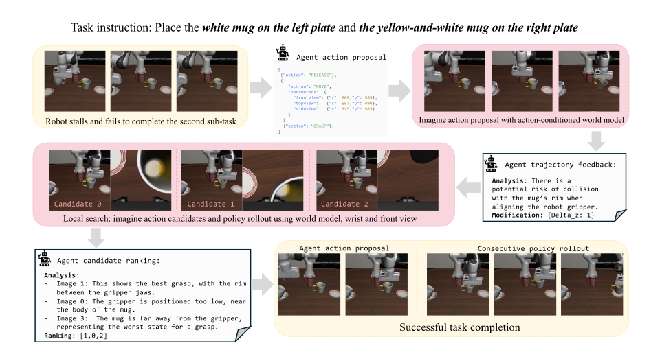

Compositional Generalization
We evaluate compositional generalization on LIBERO-Long tasks, each composed of two LIBERO-90 tasks seen during training. After completing the first subtask, the VLM proposes transition actions toward the next object, and the action-conditioned world model imagines the resulting rollout to verify that the policy can subsequently resume and complete the next subtask.
We evaluate compositional generalization on LIBERO-Long tasks, each composed of two LIBERO-90 tasks seen during training. After completing the first subtask, the VLM proposes transition actions toward the next object, and the action-conditioned world model imagines the resulting rollout to verify that the policy can subsequently resume and complete the next subtask.